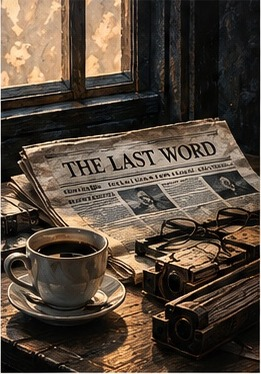

Every morning, before the bread had cooled and before the first bus dragged itself up the hill trailing black smoke, Mr. Sarkisian stopped at the newspaper kiosk beside the old cinema. He always unfolded the paper before paying. Not to read it. To make sure the pages had been folded square. Forty years in a printing house had left him with habits that outlived usefulness. If the edges did not meet cleanly, he straightened them with the side of his hand before slipping the paper beneath his arm. The woman in the kiosk watched him without pretending not to. "One day," she said, "I'll start charging extra for that." "For what?" "Straightening my newspapers." "They're not your newspapers." "They are until you pay." He handed her the coins and tucked the paper beneath his coat. "You still read the dead first?" "I've never known them to complain." "The living do enough of that." He smiled politely. She thought he smiled that way because he was old. The truth was that, at seventy-five, he had smiled that way since he was twenty-three. He never opened the front page. The front page hurried. Governments collapsed there. Men in dark suits shook hands beneath flags. By evening, most of it had already become yesterday. The last pages were different. The dead waited patiently between advertisements for dentures, funeral parlours and apartments no one he had grown up with could now afford. Mr. Sarkisian read every name. Not because he knew them. Because one day he would, or they would know him. He ran one finger beneath each line, an old compositor's gesture, as though checking that every letter had been set correctly before the ink dried. "Nothing today?" the woman asked. He folded the paper. "Not yet." She had stopped asking what he meant years ago. Mr. Sarkisian lived three streets away, in a building whose entrance smelled faintly of damp stone and boiled cabbage. A walnut tree had cracked the courtyard pavement long before anyone thought of repairing it; people simply walked around it now, as if the tree had won an argument. His apartment smelled of coffee, dust and paper. Books stood in cupboards where other people kept plates. Old dictionaries supported a table with one short leg. In the kitchen, two cups waited beside a small copper coffee pot polished so often its handle had begun to wear smooth. Above the table hung a photograph of Anahid, standing beside Lake Sevan, barefoot, her shoes dangling from one hand. The wind had blown her hair across her mouth just as someone pressed the shutter. She was always laughing in photographs. Mr. Sarkisian had often wondered whether people remembered the dead accurately, or whether photographs slowly persuaded them to remember only what had survived on paper. He lit the stove. When the coffee rose, he poured it into two cups — one before his own chair, the other beneath Anahid's photograph — and sat down. For a while neither of them touched it. Outside, someone slammed a car door. A neighbour called out to someone from a balcony. A radio played an old Charles Aznavour song somewhere across the courtyard. The second cup slowly lost its steam. Only then did he unfold the newspaper. He had not yet reached the first obituary when someone knocked. Not the hurried knocking of a neighbour, nor the patient rhythm of the postman. Three light taps. Almost polite. He waited. Whoever it was knocked again, exactly the same way, as though repeating a sentence that deserved another hearing. "Come in," he said, before remembering the door was locked. He crossed the hallway and opened it. A boy stood on the landing. Nine, perhaps ten. His hair looked as though someone had tried to comb it in a hurry. One lace trailed across the concrete floor. Under one arm he carried a schoolbag so full its zip no longer closed. "You are the printer?" "I was." "So you stopped?" "I retired." "My grandfather says retired people never stop doing the thing they retired from." "What did your grandfather do?" "He complained." Mr. Sarkisian almost laughed. "Then he's probably still working." "What's your name?" "Arsen." "My grandmother told me to come." "When?" "A long time ago. She forgot." The boy reached into his pocket and placed something on his palm. A small brass letter — Ց. Time had darkened the metal, but not enough to hide the tiny scratch near the lower curve. Something tightened inside Mr. Sarkisian. "Where did you find this?" "In her sewing box." "She kept printing type with her buttons?" "There weren't many buttons." "What is your grandmother's name?" "Sirvard Melkonian." For an instant the sounds of the building disappeared. He had not heard that name spoken aloud for more than fifty years. "Do you know her?" "I knew someone who answered to that name." "That's not the same thing." "No," he said quietly. "It isn't." He stepped aside. "You'd better come in." The boy entered without ceremony, stopped in the kitchen doorway, and noticed the two cups. "You have a guest?" "No." "Then why two?" "I've never found a good reason to stop." The boy nodded. Children, Mr. Sarkisian thought, accepted mysteries far more easily than adults. Adults demanded explanations. Children merely made room for another strange fact in the world. Arsen took a creased sheet of paper from his bag and smoothed it on the table. At the top, in blue ink: Write about someone you love. Below it, one unfinished sentence: I love my grandmother because she... Nothing more. "You couldn't finish?" The boy shook his head. "She forgot me before I found the words." "Take me to her," Mr. Sarkisian said. They walked. The city unfolded slowly around them — a woman shaking a rug from a balcony, two men arguing over tomatoes without the slightest intention of changing each other's minds, an old Lada refusing to start while its owner cursed it with extraordinary inventiveness. "Have you always lived here?" Arsen asked. "No." "Where then?" "Here." "That's the same answer." "No." He pointed with his chin toward the avenue. "When I was your age there were no cafés there. A field. Then people happened to it." The bus smelled of diesel and wet coats. Beyond the apartment blocks, Ararat floated above the haze. "So that's it. The mountain." "You've seen it before." "I've looked at it. Now I'm seeing it." Mr. Sarkisian looked at the boy's reflection in the glass and remembered someone else saying almost the same thing, many years before. Sirvard, arriving from Gyumri one spring morning with a suitcase heavier than she was, standing outside the printing house, staring at Ararat. "It's smaller than I imagined." "It isn't. You've simply come closer." Arsen's mother, Lilit, opened the apartment door before they knocked. "You found him." "I wasn't hiding," Arsen said. "You usually are." She smiled despite herself, and Mr. Sarkisian noticed that exhaustion had become part of her face. Not sadness. Routine. The apartment smelled faintly of mint tea, medicine, and apples softening in the fruit bowl. "She's having a good day," Lilit whispered. "What does that mean?" "It means she remembers enough to surprise us." Sirvard sat beside the window, knitting, or trying to — the wool crossed itself in impossible directions, and she seemed not to notice. Her hands continued working from memory even after memory itself had begun to disappear. Mr. Sarkisian had prepared himself for illness. He had not prepared himself for time. This was not the woman he remembered, nor was she someone else. She was both. Older than memory. Younger than grief. "Mama," Lilit said. Sirvard looked up. "Who are these people?" "Visitors." "I don't receive visitors." "You used to." "I used to dance too. What a waste." Arsen laughed. Sirvard turned toward him. "You laugh like someone who breaks glasses." "I've only broken one." "So there's still time." Then her eyes drifted to Mr. Sarkisian, and everything stopped — the knitting needles, the movement of her fingers, even the faint smile. She stared at him for several long seconds. "Sako." He had imagined this moment a thousand times. In every version she remembered everything. In none of them had he forgotten how to breathe. "You've become ugly," she said. "I've become old." "No. You were never handsome." Arsen burst into laughter. Even Lilit smiled. Only then did Mr. Sarkisian laugh too. "You still laugh too loudly," Sirvard said. "And you still criticize everyone." "If I stop, you'll think I'm dead." After a silence she frowned. "Did we finish the newspaper?" "No." "I told you." "You told me many things." "I was usually right." "Usually." She pointed a knitting needle at him. "Don't get brave now." For an instant, they were no longer an old man and an old woman. They were two colleagues standing over trays of metal type, arguing about commas, ink and impossible deadlines while snow fell outside the printing house. Then the light disappeared again. Sirvard looked around the room. "Excuse me. Have we met?" "You still smell of ink," she said, before he could answer. "I haven't worked in ten years." "It never leaves." Lilit looked from one to the other. "Mama hasn't spoken about the printing house in years." Sirvard ignored her and lifted one hand. "Come here." Mr. Sarkisian sat beside her. She reached for his face with surprising certainty, resting two fingers against his cheek as though checking whether it was real. "You shaved." "This morning." "You shouldn't. You looked better with ink." "I had more hair then." "You were more foolish then." "That's true." She nodded, satisfied that at least one thing remained accurate. Then she frowned. "What happened to the little drawer?" "What drawer?" "The third one. In the composing table." No one else in the room understood the question. Only he did. The third drawer — not the first, not the second. Where they had hidden things no one was supposed to see. "I don't know," he answered carefully. "Liar." It came out almost cheerfully, as if accusing him had once been one of her favourite hobbies. "You always hid things in the third drawer." "What drawer?" Lilit asked. Neither of them answered. Sirvard closed her eyes. "The blue pencil." "What about it?" "Never red." "I remember." "No. You don't." For several minutes she drifted somewhere none of them could follow — speaking to people no longer alive, asking someone to close a window, wondering whether the apricots had been brought in before the rain. Then, without warning: "Sako." "I'm here." "The proofs. They'll burn them." Mr. Sarkisian froze. He had never told anyone. Not Anahid. Not Lilit. Not even himself. Not completely. Only Sirvard knew. In those years, an unapproved word about the dead could be read as an accusation against the living — and an accusation could cost a printer his work, his freedom, or both. She caught his sleeve with surprising strength. "Did you save one?" He did not answer. "Did you?" "No." She let go. "I knew you wouldn't." The words landed harder than anger — like disappointment grown too old to shout. A moment later she blinked, her face emptied, and she looked around politely. "I'm sorry. Have we met?" Then she noticed Arsen's loose lace, beckoned him closer, tied it, and patted the shoe twice. That evening Mr. Sarkisian could not sleep. He opened cupboards without knowing why, searched drawers already searched a hundred times — old receipts, broken spectacles, buttons, train tickets, a theatre programme from 1981. Nothing. Just before dawn, he remembered. Not the drawer. The toolbox. He carried it to the kitchen table. Rust had sealed the hinges; he forced them open with a butter knife. Inside lay screws, nails, two worn composing sticks — and beneath them, a folded proof. Thin. Yellow. Fragile. He unfolded it carefully. The paper crackled. At the top, in Sirvard's handwriting, in blue pencil: People deserve the truth after death because they no longer have anything to protect. Below it — names. Dozens of them. And beside every name, the final sentence that person had spoken. Mr. Sarkisian sat perfectly still. Outside, morning arrived exactly as it always did. Inside, fifty years arrived all at once. He did not tell Arsen about the proof. Not the next morning, nor the day after. The boy arrived as usual, dropping his schoolbag in the hallway before remembering that polite children were expected to say hello. "Sorry." "You weren't raised by wolves after all." "My grandmother says wolves have better manners than most people." "Only when she remembers them," Mr. Sarkisian said, and unfolded the yellow sheet once more. The paper had become so brittle that every movement sounded like someone breathing through dry leaves. Arsen leaned over his shoulder. "So these are really the last words?" "Some of them." "How do you know?" "We asked." "You can do that?" "When grief is still too surprised to lie. Later, everyone improves the story." Over the next few days, they followed the names. Some places no longer existed as they remembered them — a grocery had become a pharmacy, a courtyard where children once played football had disappeared beneath a glass office building. Yerevan had not forgotten. It had simply continued. At one address, an old woman opened the door before they knocked. "I knew you'd come," she said. "My husband always said someone would come one day asking about his last words." She disappeared, then returned carrying a biscuit tin — letters, photographs, army medals, a bus ticket from 1974, and a folded piece of paper. "My son wrote down what his father said." She handed it to Arsen. Don't throw away my boots. They've already learned your feet. "He talked about boots?" "He loved those boots more than me." Arsen looked down at the tin, then back at her, as though the answer might be hiding among the medals. "Was that really the last thing he said?" "Yes." "Weren't you disappointed?" "For years." She looked at the photograph on the wall. "Now I understand. He wasn't talking about boots. He was trying to stay." That evening Mr. Sarkisian crossed out three names. One had died alone; relatives disagreed about another; the third phrase came from a funeral speech. "Why?" Arsen asked. "They're wrong." "But the families told us." "They told us what they needed. We're not collecting beautiful sentences." He folded the page. "We're collecting true ones." Three days later they reached the last address on Sirvard's list. The apartment stood empty. A neighbour brushing snow from her balcony leaned over the railing. "Looking for the Levonians?" "Yes." "They've all gone. France. Thirty years ago." Mr. Sarkisian thanked her. As they turned to leave, she called after them, disappeared inside, and returned carrying a small enamel bowl. "I found this when they left." Inside lay a folded scrap of newspaper — yellow with age. Not an article. Not a photograph. A proof. One of theirs. Half burned along one edge. Only four entries remained readable. At the bottom, in blue pencil: If nobody prints the truth, memory becomes a second funeral. Mr. Sarkisian stared at the sentence for so long that Arsen finally tugged at his sleeve. "Did she write that?" "Yes." "Was she right?" He folded the page again. "Not completely." "What do you mean?" He looked across the city toward the mountain, and said nothing more that day. Lilit called in the small hours. She did not say that Sirvard was dying. She said, "She keeps asking whether the presses are ready." Mr. Sarkisian understood. He did not put on a tie. He had worn one to funerals all his life. This would not be a funeral. It would be work. Before leaving, he took the ink and paper he had bought two days earlier. When Mr. Sarkisian reached Sirvard's building, Arsen was waiting downstairs, his coat buttoned crookedly. Lilit understood. The old printing house stood exactly where memory had left it. The windows were broken. Snow had drifted across the floor. An old hand press slept beneath a cracked tarpaulin and a skin of dust. "You worked here?" "For most of my life." "It smells strange." "It smells like lead. Forgotten lead." It took them nearly three hours to uncover, clean and oil the press. They lit the stove and found old cigarette packets, a broken ruler, a child's marble, someone's wedding ring. Nobody spoke much. There are places where silence becomes another tool. When the rollers finally turned, the sound startled birds from the roof. Mr. Sarkisian closed his eyes. He had forgotten the weight of that sound. Not loud. Certain. As though iron itself had remembered its purpose. Arsen carried the trays of type — letter after letter, backward, upside down, exactly as generations of printers had done before computers persuaded people that words had no weight. Mr. Sarkisian placed the brass Ց from Sirvard's sewing box at the bottom as their old printer's mark. "What do we print first?" Mr. Sarkisian studied the empty forme, then reached into his pocket. Not Sirvard's page. Not the proof. An old photograph — Anahid, Lake Sevan, bare feet, laughing into the wind. He placed it beside the metal letters, where she could witness what he had failed to tell her. "Anahid should be here." "I thought this was for Sirvard." "It is." "I don't understand." "I never told Anahid what Sirvard and I had done." He picked up the composing stick and began setting the letters. Not beautifully. Not perfectly. His hands trembled; twice he chose the wrong character; once he dropped an entire line onto the floor. Arsen knelt without a word and helped him gather every piece. When the forme was locked, Mr. Sarkisian inked the rollers and pulled the lever. The machine hesitated, coughed, then moved. One sheet. Then another. At the top: THE LAST WORD. Below: Sirvard Melkonian. Last clear act: She tied her grandson's shoe because her hands remembered what her mind no longer could. He stared at the page for a long time. "No." He lifted it away and folded the sheet. "It sounds as though someone is trying to impress strangers." "But it's true." "That's not the same thing." He dropped the page into the stove. It burned in seconds. He began again. This time only: Sirvard Melkonian. She tied her grandson's shoe. Better. Still not right. He burned that one too. And another. By sunrise the floor was covered with failed truths. Finally he stopped trying to explain, and set only this: Sirvard Melkonian. She tied his shoe. Nothing else. He looked at Arsen. "What do you think?" The boy read it twice, then nodded. "I know the rest." "So will everyone who needs to." Then, one by one, they added the remaining verified names and final words beneath it. They printed exactly one hundred copies. When the ink dried they folded every sheet by hand, the way newspapers had always been folded. Square. Careful. Lilit took the first copy to Sirvard. She ran her fingers over the name, as though reading it by touch, and said nothing. The woman from the kiosk and Lilit helped them distribute the copies. People found them that morning inside newspapers, between advertisements, under bread, on bus seats, on hospital benches. No explanation. Only names. Only final words, and one last clear act. Some readers laughed. Some complained. One reader called it sentimental; another called it indecent. By noon, the kiosk woman had told three people where the sheets had come from; each told three more. By evening, there was a queue outside the abandoned printing house. No journalists, no politicians — a baker, a violin teacher, a taxi driver, a widow carrying a shopping bag. Each one held a name. Each one asked the same question. "Would you print one more?" Three days later Sirvard died. Mr. Sarkisian did not buy the newspaper. For the first time in half a century, he already knew. A week passed, then another. The second coffee cup remained on the table. He still filled it every morning. Some habits belonged to grief. Others belonged to gratitude. He had finally learned the difference. One morning Arsen burst through the door, running, late, one shoelace trailing behind him — exactly as always. Mr. Sarkisian looked down. He almost called after him. Instead, he knelt, tied the lace, pulled the knot tight, and, without thinking, patted the shoe twice. His hand stopped. Arsen looked at him. "So that's why." "Why what?" "Why Grandma never had to remember. Her hands already knew." Neither of them spoke again. Outside, the first bus climbed the hill. Somewhere a newspaper landed on a doorstep. Someone unfolded it, searched the obituaries, remembered a voice instead of a date. Mr. Sarkisian stood, left his newspaper folded on the table, and stepped into the street with the boy. The dead, he thought, could wait. The living had already waited long enough.
SHORT STORY · 2026
The Last Word
Emil Margaryan

© 2026 Emil Margaryan. All rights reserved.